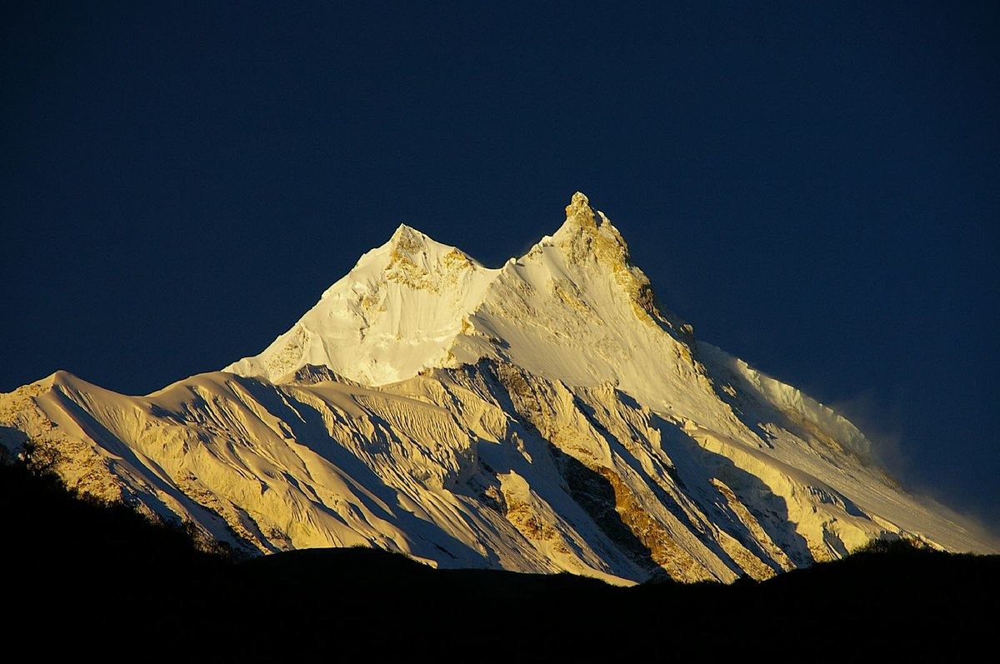
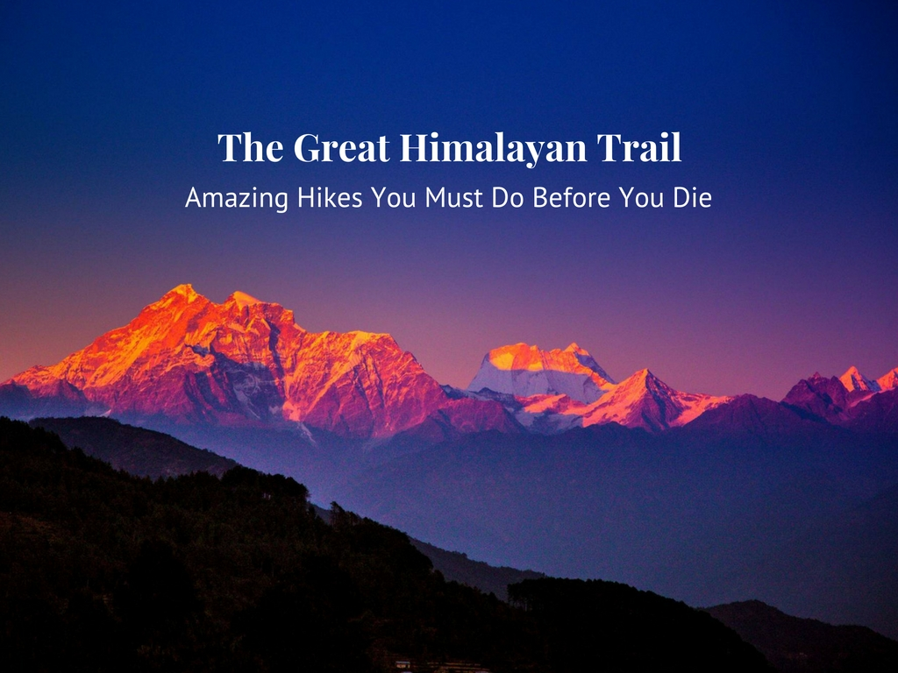

LHOTSE

MAKALU

CHO OYU

DHAULAGIRI

MANASLU

GAYCHUNG KONG

❮
❯
GREAT HIMALAYAN TRAILS:Plan your trip; Click here
MOUNTAINEERING IN NEPAL
With eight of the world's highest mountain peaks to climb Nepal is a mountaineering paradise. Choose between the ultimate summit of Mt. Everest, the technical challenges of Lhose or take on any of the other 326 stunning mountain peak challenges that wait!
Nepal is the home of the most formidable mountain range in the world with nearly a third of the country lying above the elevation of over 3,500 m. Not only does the highest peak on earth, Everest, fall within Nepal's territory but so do Kanchenjunga, Lhotse, Makalu, Cho Oyu, Dhaulagiri, Manaslu and Annapurna, eight of the fourteen 8,000 m peaks of the world.
Apart from the majestic big eight there are 326 other mountains in Nepal open for mountaineering expeditions and 103 are still awaiting a first ascent. Nepal offers the mountaineer more opportunities than any other region and many of these opportunities can be found in the shadows of its Himalayan jewels.
Nepal has an extensive history of mountaineering with the early explorers being lured into the deep valleys and lofty peaks by the challenges of untrodden summits. Today Nepal has built a substantial service industry around mountaineering with many facilities being well established to facilitate foreign expeditions achieving their expectations and goals amongst the abode of snow.
The reputation of the Sherpas is built on mountaineering with many of these mountain people achieving respected mountaineering status in their own right. Now their ranks are joined by people from other groups however, and the generic term given to those Nepali people who earn a living from working in the mountains are now generally accepted as being Sherpas.
Despite the fact that mountains such as Everest and Annapurna are household names and receive a lot of media attention there are other areas that are far less frequented. For expeditions looking for new challenges and opportunities on lower, but equally as challenging peaks and who want to have the mountain to themselves, the choice is wide and varied.
Nepal has designated the Annapurna, Manaslu and Kanchenjunga regions as Conservation Areas while Sagarmatha (Everest), Langtang and Shey-Phoksundo (Dolpo) are National Parks while other mountain areas might not fall into these categories they will be in what is termed ‘Restricted Areas’ close to Nepal’s northern border. While the infrastructure of, and accessibility to Sagarmatha, Annapurna, Manaslu and Langtang are well developed and easily accessible enabling mountaineers and expeditions to make fast progress to their Base Camps the remaining areas, including the restricted areas are still very remote, rescue or help from external sources will be difficult or unlikely and access to these areas will be complex and at times difficult. Expeditions into those areas require a totally different approach, level of commitment and organizational ability to achieve success on their chosen summit.
The mountains of Nepal are grouped into different categories depending on their height and under whose authority they lay. The Ministry of Tourism is responsible for the expedition peaks above 6500metres, while the Nepal Mountaineering Association is responsible for mountains that are termed Trekking Peaks. These peaks range in altitude from 5800metres to 6584metres, although one should not be mislead into thinking these mountains can be easily ascended. Expeditions to peaks below 5800metres do not require climbing permits although they will require other forms of permits to enter specific regions. All expeditions are required to pay refundable garbage deposits while expeditions to peaks above 6500metres will also be required to employ a Liaison Officer. The best time for mountaineering expeditions is pre monsoon when the weather better, especially at altitude, although the visibility might be restricted with the pending monsoon conditions. Autumn is good for the slightly lower peaks, while winter is cold with short days and early spring might be subjected to seasonal snow storms. However, in these times of global warming and climate change the seasons are no longer as predictable as they use to be.
Today in Nepal it is possible to book onto either a commercial expedition to attempt any of the larger mountains or to attempt a trekking peak with one of the many Nepalese Trekking Agents. If an independent expedition wishes to attempt any of the ‘legally’ open peaks then they should make themselves familiar with the appropriate policies and procedures legally required under the current Nepal Tourism Act (Provisions relating to Mountaineering).
With eight of the world's highest mountain peaks to climb Nepal is a mountaineering paradise. Choose between the ultimate summit of Mt. Everest, the technical challenges of Lhose or take on any of the other 326 stunning mountain peak challenges that wait!
Nepal is the home of the most formidable mountain range in the world with nearly a third of the country lying above the elevation of over 3,500 m. Not only does the highest peak on earth, Everest, fall within Nepal's territory but so do Kanchenjunga, Lhotse, Makalu, Cho Oyu, Dhaulagiri, Manaslu and Annapurna, eight of the fourteen 8,000 m peaks of the world.
Apart from the majestic big eight there are 326 other mountains in Nepal open for mountaineering expeditions and 103 are still awaiting a first ascent. Nepal offers the mountaineer more opportunities than any other region and many of these opportunities can be found in the shadows of its Himalayan jewels.
Nepal has an extensive history of mountaineering with the early explorers being lured into the deep valleys and lofty peaks by the challenges of untrodden summits. Today Nepal has built a substantial service industry around mountaineering with many facilities being well established to facilitate foreign expeditions achieving their expectations and goals amongst the abode of snow.
The reputation of the Sherpas is built on mountaineering with many of these mountain people achieving respected mountaineering status in their own right. Now their ranks are joined by people from other groups however, and the generic term given to those Nepali people who earn a living from working in the mountains are now generally accepted as being Sherpas.
Despite the fact that mountains such as Everest and Annapurna are household names and receive a lot of media attention there are other areas that are far less frequented. For expeditions looking for new challenges and opportunities on lower, but equally as challenging peaks and who want to have the mountain to themselves, the choice is wide and varied.
Nepal has designated the Annapurna, Manaslu and Kanchenjunga regions as Conservation Areas while Sagarmatha (Everest), Langtang and Shey-Phoksundo (Dolpo) are National Parks while other mountain areas might not fall into these categories they will be in what is termed ‘Restricted Areas’ close to Nepal’s northern border. While the infrastructure of, and accessibility to Sagarmatha, Annapurna, Manaslu and Langtang are well developed and easily accessible enabling mountaineers and expeditions to make fast progress to their Base Camps the remaining areas, including the restricted areas are still very remote, rescue or help from external sources will be difficult or unlikely and access to these areas will be complex and at times difficult. Expeditions into those areas require a totally different approach, level of commitment and organizational ability to achieve success on their chosen summit.
The mountains of Nepal are grouped into different categories depending on their height and under whose authority they lay. The Ministry of Tourism is responsible for the expedition peaks above 6500metres, while the Nepal Mountaineering Association is responsible for mountains that are termed Trekking Peaks. These peaks range in altitude from 5800metres to 6584metres, although one should not be mislead into thinking these mountains can be easily ascended. Expeditions to peaks below 5800metres do not require climbing permits although they will require other forms of permits to enter specific regions. All expeditions are required to pay refundable garbage deposits while expeditions to peaks above 6500metres will also be required to employ a Liaison Officer. The best time for mountaineering expeditions is pre monsoon when the weather better, especially at altitude, although the visibility might be restricted with the pending monsoon conditions. Autumn is good for the slightly lower peaks, while winter is cold with short days and early spring might be subjected to seasonal snow storms. However, in these times of global warming and climate change the seasons are no longer as predictable as they use to be.
Today in Nepal it is possible to book onto either a commercial expedition to attempt any of the larger mountains or to attempt a trekking peak with one of the many Nepalese Trekking Agents. If an independent expedition wishes to attempt any of the ‘legally’ open peaks then they should make themselves familiar with the appropriate policies and procedures legally required under the current Nepal Tourism Act (Provisions relating to Mountaineering).